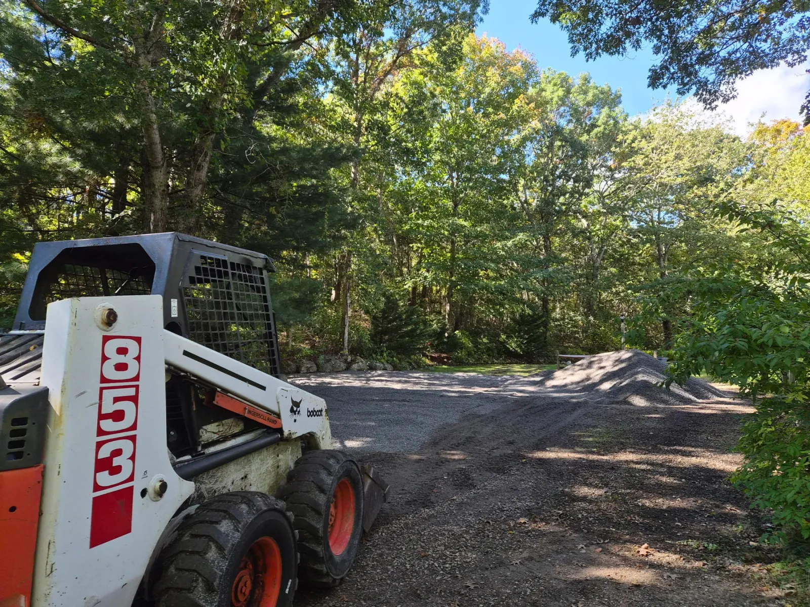
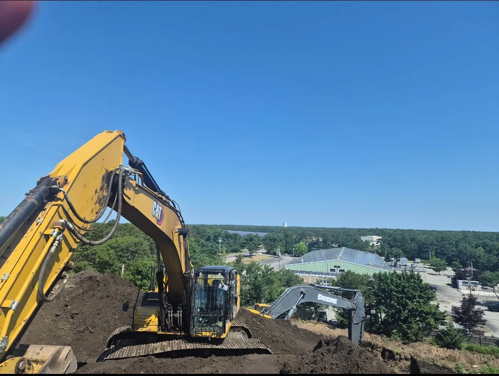
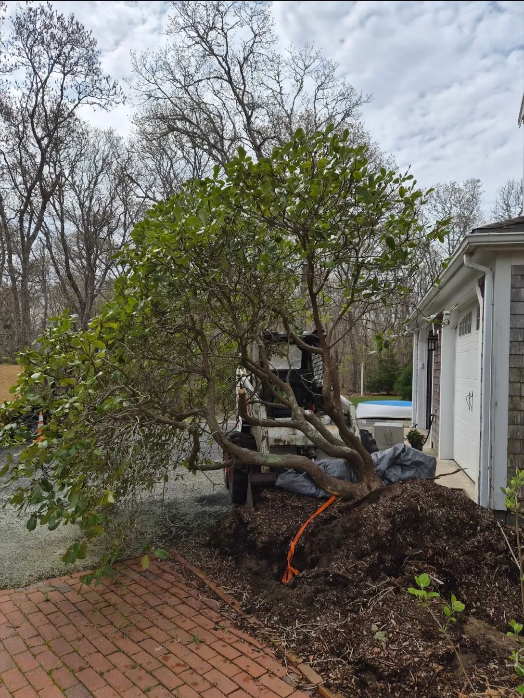

01
Bobcat & Skid-Steer Services
Bobcat and skid-steer work for moving material, brush clearing, land clearing, tight-access excavation, and site preparation across Cape Cod properties.
Cape Cod property services • 10+ years of experience
Bobcat & Skid-Steer Services • Driveways • Drainage • Excavation • Property Cleanups
What we do
From a focused repair to a full property cleanup, AB brings the right equipment, a practical plan, and owner-operated service.
Bobcat and skid-steer work for moving material, brush clearing, land clearing, tight-access excavation, and site preparation across Cape Cod properties.
Gravel driveway installation, repair, reshaping, and grading to restore access, correct low spots, and improve runoff.
Drainage improvements, land grading, excavation, and site preparation to move water away from driveways, yards, and work areas.
Tree work, brush removal, and property clearing with the equipment needed to reclaim overgrown or storm-affected areas.
Landscaping, seasonal property cleanup, debris removal, and routine maintenance for Cape Cod homes and seasonal properties.
Snow removal, dump runs, and material hauling for seasonal access, cleanup debris, soil, gravel, and other property materials.
Our work
Actual equipment and project work from AB Yard Care & Construction.



Free estimates
Need help with driveway grading, drainage, excavation, clearing, or property cleanup on Cape Cod? Contact AB Yard Care & Construction for a free estimate.